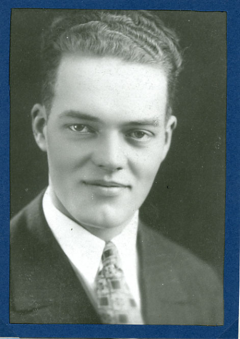

|
 Clifford's 1925 Engagement Photo | Clifford Gordon Wogsland was born July 9th, 1902 to Florence and Andrew Wogsland. He married Mae Brunberg 12 October 1926 in Great Falls, MT and together they had one child. He later married Elizabeth Lenarz (c.1930) with whom he also had one child. Clifford died September 5th, 1986 in Sun City, AZ. |